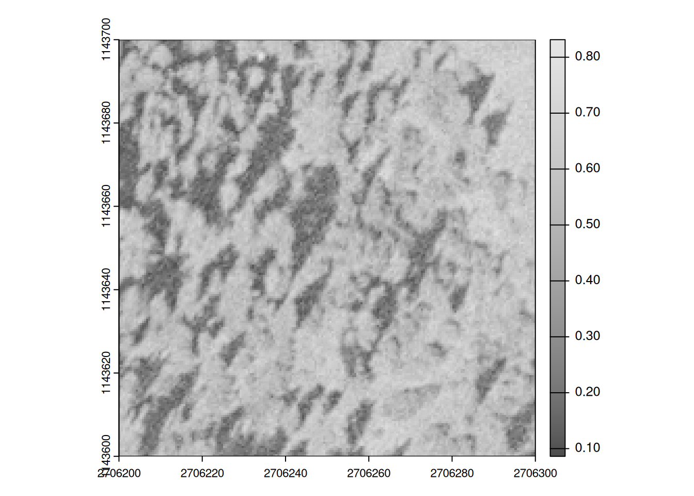
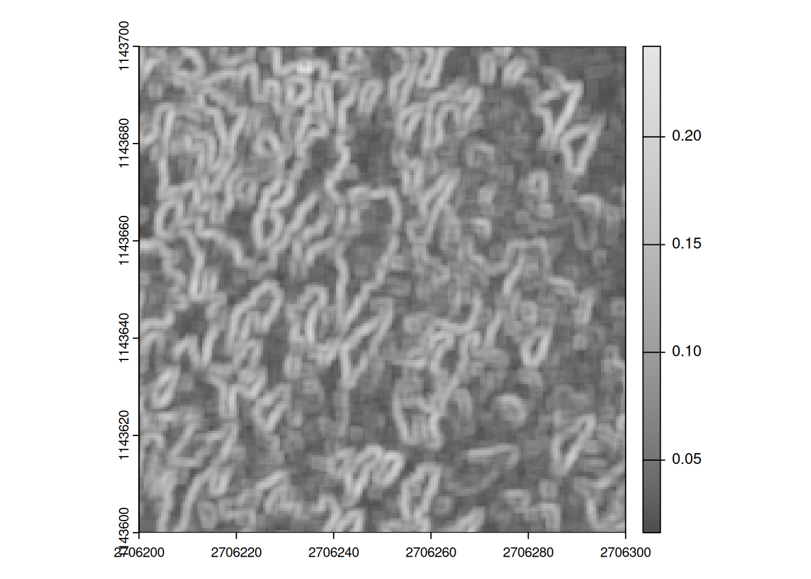
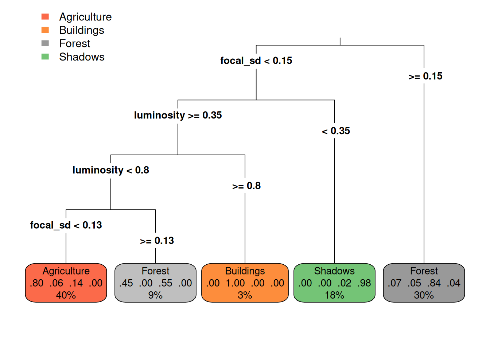

\[x' = \frac{x - min(x)}{\max(x) - min(x)}\]
global(x, min) or (slightly faster) minmax(x). luminosity focal_sd
1 0.1843137 0.1800299
2 0.3568627 0.2273958
3 0.1960784 0.2349411
4 0.4392157 0.1740047
5 0.6313725 0.1663846
6 0.2823529 0.3338187
See ?@sec-prediction-per-class and ?@sec-highest-probability-class.
See ?@sec-model-evaluation-1 and ?@sec-model-evaluation-2
Actual
|
||||
|---|---|---|---|---|
| Agriculture | Buildings | Forest | Shadows | |
| Agriculture | 38 | 5 | 11 | 0 |
| Buildings | 0 | 4 | 0 | 0 |
| Forest | 3 | 0 | 28 | 1 |
| Shadows | 0 | 0 | 0 | 19 |
focal function to create new features as described above